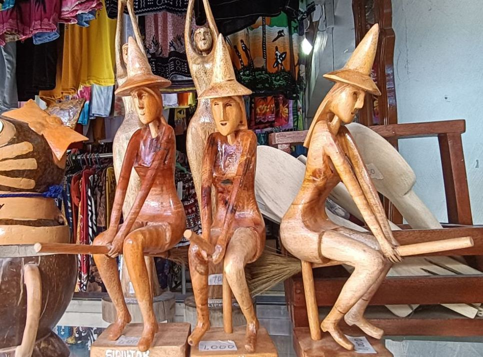

Siquijor
Siquijor is an island province in the Philippines, located in the Central Visayas region. It is known for its beautiful beaches, lush forests, and rich history. The Siquijor people are a warm and hospitable group who are proud of their unique culture and traditions.
History
Pre-colonial era
The Siquijor people are believed to have descended from the Austronesians who migrated to the Philippines from Southeast Asia around 2,000 years ago. The Siquijor people developed a unique culture that was influenced by the various groups of people who visited the island, including the Malays, Chinese, and Arabs. The Siquijor people were skilled farmers and fishermen, and they also developed a rich tradition of weaving and pottery
Culture
Siquijor culture is a blend of indigenous, Spanish, and American influences. T he people are deeply religious and have a strong belief in the power of nature. They are also known for their love of music and dance.
Siquijor Dance
Siquijor is also famous for its folklore and legends. The island is said to be a place of enchantment, and there are many stories of fairies, witches, and other magical creatures.
Siquijor Folklore
Etiquettes
When visiting Siquijor, it is important to be respectful of the local culture and traditions. Here are a few tips:
- Dress modestly. Cover your shoulders and knees, and avoid wearing revealing clothing.
- Be respectful of elders. Elders are held in high esteem in Siquijor culture, and it is important to treat them with respect.
- Avoid pointing or using harsh language. Siquijor people are generally polite and respectful, and it is important to reciprocate this attitude.
- Ask permission before taking photos. It is considered rude to take photos of people without their permission.
- Do not touch people or their belongings without permission. Siquijor people are generally private, and it is important to respect their privacy.
- Offer gifts. If you are invited to someone's home, it is polite to bring a gift of food or drink.
- Be patient. Siquijor people are generally laid-back and relaxed, so don't expect things to happen quickly.
By following these tips, you can help ensure that you have a positive and respectful experience when visiting Siquijor.
Additional Information
- The Siquijor people are a hospitable people, and they are always happy to welcome visitors to their island.
- There are a number of festivals and celebrations that take place in Siquijor throughout the year.
- The island is home to a number of stunning natural attractions, including Cambugahay Falls, Lugnason Falls, and the Siquijor Natural Bridge.
- Siquijor is a great place to go for swimming, snorkeling, and diving.
I hope this information is helpful.